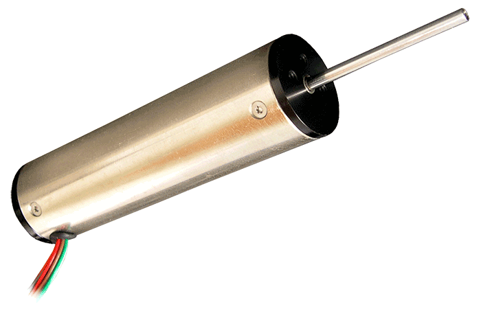
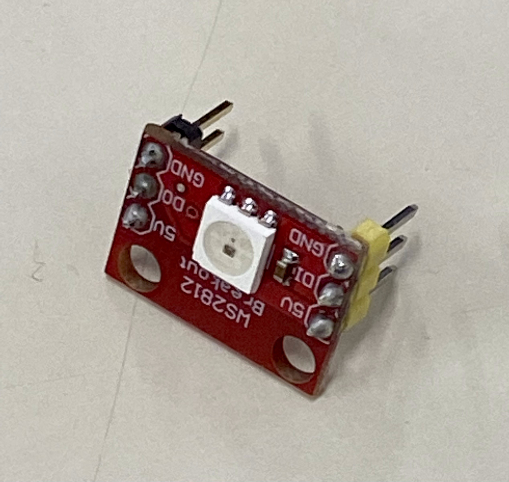
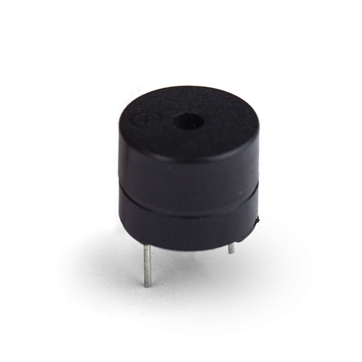
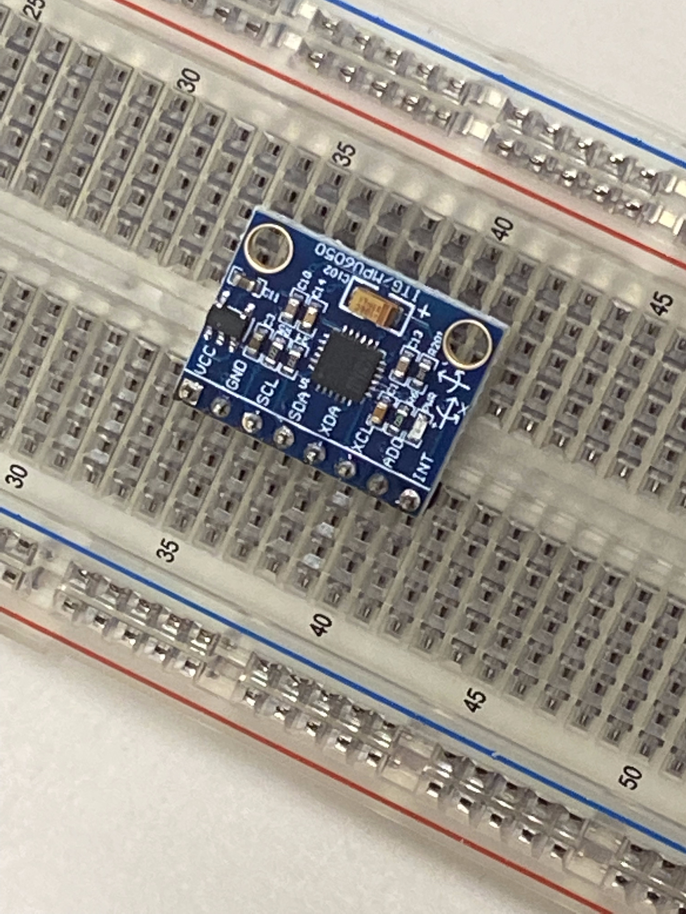
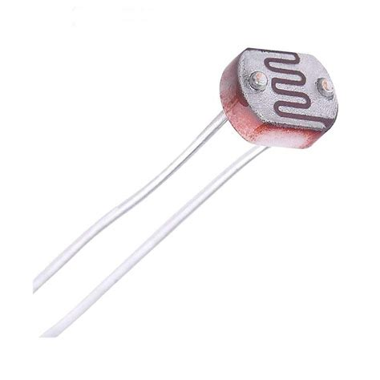

Il flusso continuo delle
merci, l'interconnessione delle
vie di trasporto, i molteplici
mezzi con cui viaggiano
beni e materie prime di qualunque tipo hanno rivoluzionato
tutti i settori economico produttivi e la vita e le abitudini di ciascuno di noi. Il mondo
della
logistica e dei
trasporti ha raggiunto degli altissimi livelli di automazione e
innovazione tecnologica. Possiamo solo immaginare questa rete formata da
magazzini
robotizzati, veicoli a guida
autonoma, gestione logistica, sistemi satellitari,
software sofisticati e nuove professionalità che consente ad ogni tipo di merce, dal
primo stadio di materie prime al prodotto finito, di
arrivare sullo scaffale del negozio o
direttamente al domicilio dell'utente finale. La complessità e l'altissimo livello di
innovazione ci portano a pensare che non ci sia più nulla da innovare o inventare.
Cominciando a riflettere e a discutere intorno alle domande e alle sfide del video
It's
Time to Go Full Speed Ahead: 2021-2022 Robotics Season FIRST FORWARD
presented by Qualcomm, abbiamo delineato un problema ed un obiettivo. Ci siamo
concentrati sul
trasporto di animali da compagnia o piccoli animali (riflettendo e
sviluppando in particolare lo spunto posto dalla domanda
“if you could innovate to
change someone's life, what would you deliver”).
Abbiamo quindi pensato a progettare e realizzare un dispositivo che permetta di
mantenere l'orizzontalità durante il trasporto. Abbiamo denominato il nostro
dispositivo
Cargo Stabilizator.
Il nostro progetto prevede più fasi di sviluppo:
-
Fase uno (attualmente in corso): realizzazione di un primo prototipo dotato di
sensore giroscopico, microcontrollore, led rgb. Il prototipo è costituito da un
piano in legno dotato di maniglie. Il microcontrollore prende in input le
informazioni dal giroscopio fornendo gli output relativi agli scostamenti rispetto
alla posizione orizzontale sotto forma di segnali luminosi posti in
corrispondenza dei quattro angoli del piano. In base ai segnali luminosi, un
operatore corregge la posizione del piano.
-
Fase due: sostituzione della risposta manuale con attuatori lineari e
sperimentazione su un carrello a spinta manuale.
-
Fase tre: messa a punto del dispositivo su veicolo a motore.
Arduino UNO
L'arduino uno è un microcontrollore formato da 14 ingressi/uscite digitali e 6 ingressi
analogici, è programmabile e permette la realizzazione di diversi tipi di circuiti elettronici
Attuatore Lineare
Un attuatore lineare è un attuatore che crea il movimento lungo una linea dritta,
in contrasto con il moto rotativo di un motore elettrico

Led RGB
Componente di una striscia led collegabile con altri led in parallelo

Buzzer
Il buzzer è un piccolo altoparlante o trasduttore piezoelettrico, in grado di generare toni.
Tramite Arduino, ed utilizzando appositi sketch e circuiti, è possibile fargli riprodurre della musica

MPU-6050
Questo sensore contiene ,in un singolo integrato, un accelerometro e un giroscopio a 3 assi.
Con il giroscopio possiamo misurare l'accelerazione angolare di un corpo su di un proprio asse, mentre con l'accelerometro
possiamo misurare l'accelerazione di un corpo lungo una direzione.

Fotoresistore
È un componente la cui resistenza elettrica varia in base alla luminosità dell' ambiente circostante
